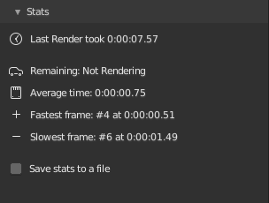
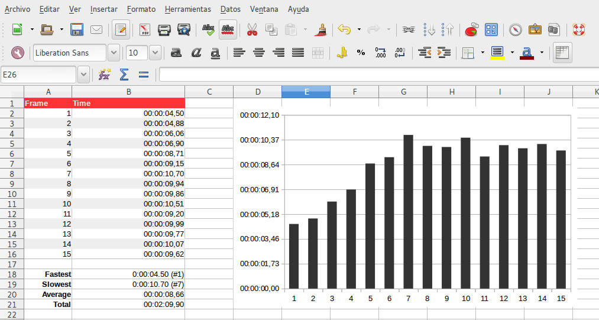

Stats

When you render an image, Render+ will save the total render time. This
data is shown in the stats section of the Render+ Settings panel
Render stats are stored in the scene data, so when you re-open the file
later you can check out how long your last render took.
When you render an animation you get some extra information:
The average render time (counting all frames)
The fastest and slowest frames, and how long they took to render
An estimation of the remaining time to render the whole animation (only while rendering)
Click the arrow icon next to the total rendertime to reveal the animation stats. This data will be available after rendering the second frame. The animation stats will continue to be available afterwards, even if you do image renders (they won’t be updated though).
Exporting to a CSV file

CSV files store tabular data in plain text. CSV stands for comma-separated values. These files are often used by banks, finance and spreadsheet software to exchange and import data.
These files can also be imported into databases and be used to make graphs. Exporting to CSV files will allow you to keep logs of your render performance, analyze it with graphs or just be able to check multiple stats for the same blend file (if running a renderfarm, for example).
Render+ can export stats data into a CSV file after rendering. To enable
it check the option Save stats to file in the Render+ Settings
panel. After rendering you’ll find a file called
’[YOUR_BLEND_FILE]_stats.csv’ in the same folder of your blend file. If
you’re rendering an unsaved blend, the csv file will be called
Untitled.blend_stats.csv. Note that only animation renders can
export CSV data.
Exported CSVs use American decimal notation. If the software you’re importing into is in a different language (like Spanish or French) you may need to tell it to use a special decimal notation.
Using stats data in your own scripts
The stats data for the current scene can be found in
bpy.context.scene.renderplus.stats. There you will find these
properties:
total
average
slowest
fastest
The last two are tuples. The first element being the frame number, the second being the time. Times are in seconds, to convert to a string with HH:MM:SS.UU format you can use the time_format() function in the utils module.
>>> bpy.context.scene.renderplus.stats.total
3.6908271312713623
>>> from renderplus.utils import time_format
>>> time_format(bpy.context.scene.renderplus.stats.total)
'0:00:03.69'